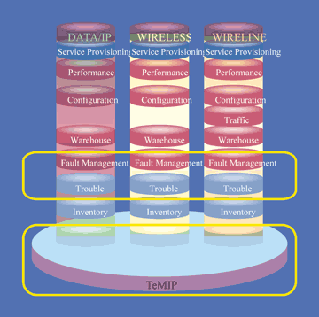

Ростислав Сергеев
Compaq (http://www.compaq.com) по праву считается одним из ведущих производителей компьютерной техники в мире. Однако те, кто считает, что все внимание корпорации сконцентрировано на производстве персональных компьютеров и серверов, глубоко заблуждаются. Compaq хорошо чувствует себя и в бурных водах телекоммуникационного рынка, причем не только в области производства аппаратных средств (что естественно для производителя компьютерной техники), но и в разработке программных продуктов.
Компания предлагает рынку несколько телекоммуникационных решений для предприятий, которые могут существенно различаться по масштабу, сфере деятельности и спектру приобретаемых услуг. Есть у Compaq локальные решения, решения для защиты от несанкционированного использования каналов связи и другие. Однако среди созданного в компании ПО особо нужно отметить интеллектуальную платформу сетевого управления TeMIP (Telecommunications Management Information Platform). Высокая популярность TeMIP обусловлена тем, что это было одно из первых решений, реализовавших концепцию управления сложной, гетерогенной сетью абонентов. При этом очень важно, что TeMIP позволяет получать информацию о происходящих событиях и выполнять необходимые изменения сетевых параметров в режиме реального времени.
В рамках единого процесса управления в TeMIP интегрируются все операции по мониторингу производительности, поиску сбоев, конфигурированию и управлению всеми доступными ресурсами и сервисами сети. Эта платформа, адаптированная под стандарт OSI (Open System Interconnection), разрабатывалась с ориентацией на будущие возможности мобильной связи третьего поколения, в ее состав входят модули сбора данных о состоянии элементов IP-сетей, использующие протокол SNMP.
Интерес к TeMIP велик во всем мире. До недавнего времени исключение составляла Россия, но в конце прошлого года в Compaq было принято решение исправить ситуацию. В российском представительстве компании было создано специальное подразделение, которое в начале 2001 г. возглавил Николай Исаков, ранее работавший в компании Novell.
Немного истории
TeMIP достался Compaq "в наследство" от исследовательского центра Digital Equipment Corporation (DEC), расположенного на юге Франции, где в прошлом создавалось нечто вроде академгородка в Новосибирске. В этом регионе собралось большое количество научных работников, в том числе и специализирующихся в области телекоммуникаций. Со временем французское правительство сократило финансирование исследовательских работ, но создало налоговые и другие экономические льготы, позволившие реализовать нечто вроде небольшого европейского аналога Кремниевой долины. Многие фирмы, в том числе и DEC, организовали там свои филиалы и научные центры.
Вот там-то и была разработана концепция интеллектуального управления сетями, а затем и создан сам продукт TeMIP. Теперь это собственность Compaq, широко продаваемая во всем мире, естественно, по достаточно высокой цене. Реальное внедрение этого ПО в расчете на 100 тыс. абонентов стоит не менее 200 тыс. долл., к которым следует прибавить стоимость хорошего, надежного сервера с возможностями резервирования и масштабирования. Нужно отметить, что само ядро продукта может функционировать исключительно на платформе Alpha в среде ОС True64 UNIX.
Структура и уровни
Преимущества TeMIP особенно заметны при необходимости регулярно расширять систему и увеличивать число абонентов. Привлекателен этот пакет и для заказчиков, использующих большое количество оборудования от различных производителей. В силу ряда архитектурных особенностей продукта дополнительные финансовые вложения оператора оказываются минимальными.
|  | Рис. 1. Структура TeMIP.
|
TeMIP - платформа управления как для традиционных операторов связи, так и для операторов мобильной связи и тех, кто использует IP-протоколы для передачи данных. Таким образом, речь идет об интегральном решении, полезном практически для всех крупных поставщиков телекоммуникационных услуг, поскольку современный оператор связи, как правило, работает со всеми тремя разновидностями коммуникационных услуг. TeMIP может служить единой платформой управления для всего необходимого оборудования.
Структура ПО включает ряд иерархических уровней и функциональных модулей. Уровень Inventory ("Склад") предоставляет пользователям возможность просмотра состояния всех устройств и линий связи, имеющихся в сети, вплоть до конечного коммутатора. На нем также предусмотрена организация контроля пороговых значений при возникновении потенциальной проблемы либо критического уровня трафика.
Уровень Trouble ("Сбой") позволяет клиенту TeMIP контролировать возникающие проблемы, определяя и дифференцируя их с помощью интеллектуального модуля. Этот модуль дает возможность проанализировать ситуацию и получить единственное решение в сочетании с точной информацией о том, что же реально произошло. Например, если произошел обрыв линии в результате физического разрушения кабеля, то интеллектуальный контроль соберет все тревожные сообщения, поступающие от многочисленного оборудования, проанализирует сложившуюся ситуацию и выдаст решение о наличии точно локализованного источника неисправности. Наиболее актуально такое решение для традиционных операторов связи, эксплуатирующих кабельные линии.
Следующий уровень пакета, Fault Management, служит для управления сбоями. Если в сети произошел сбой и по результатам анализа ситуации очевидно, что это не разрыв линии (т. е. высылать на место бригаду ремонтных рабочих не нужно), то возникает вопрос: можно ли организовать удаленное управление? Для решения задачи можно либо попытаться восстановить неисправное устройство путем его перенастройки, либо перенаправить информационные потоки по резервным каналам или незагруженным линиям связи.
Configuration - уровень конфигурирования сети. Именно с помощью средств этого уровня и осуществляется перенастройка информационной инфраструктуры сети связи (например, использование резервных каналов при перегрузке основных или возникновении неисправностей, определяемых на уровне Fault Management). Эти операции можно выполнять как вручную, так и автоматически. В последнем случае применяются конфигурационные профили, которые определяют стандартную настройку сети в каждой конкретной ситуации. Но профессионально сделанная "вручную" конфигурация зачастую позволяет более эффективно использовать дополнительные телекоммуникационные возможности.
Уровень Performance служит для управления производительностью всей системы в целом, включая IP-сети и сети передачи данных. Оператор, работающий с визуальным представлением всех участков сети и подсетей, может самостоятельно или с помощью инструментов уровней Trouble и Fault Management оценить уровень их загрузки и заранее определить наличие "болевых точек", после чего перенастроить информационные потоки или подключить резервные мощности сети и емкости каналов связи, не позволяя ситуации перерасти в критическую.
Модуль Warehouse представляет собой единую базу данных системы, модуль Traffic - средство управления и контроля трафика в кабельных коммуникациях.
Подключение нового оборудования
По мнению сотрудников российского представительства Compaq, наибольший интерес для любого оператора связи представляет уровень Service Provisioning ("обеспечение сервисов"). Именно с помощью его средств и инструментов пользователи могут добавлять новые услуги и новые возможности для своих сетей. Именно на этом уровне находятся специальные структуры TeMIP, названные Access-модулями, которые позволяют включать в систему связи новое оборудование практически в режиме реального времени.
| Рис. 2. Access-модули.
|
Что это означает для оператора связи? Приобретая новые станции и периферийные устройства, оператор обычно должен обучить сотрудников работе с этим оборудованием, закупить для них специальное ПО, т. е. сделать дополнительные инвестиции. Если же используется управление TeMIP, то оператору достаточно просто проверить, имеется ли соответствующий данному оборудованию Access-модуль. Если такого модуля нет, его можно приобрести за несколько десятков долларов. При этом управление остается единым.
Что значит установить Access-модуль? Он просто добавляется в систему и начинает взаимодействовать с ядром TeMIP. При этом модуль автоматически соединяется со "своим" оборудованием, осуществляя либо управление, либо контроль - в зависимости от стоящих задач. Оператор, управляющий сетью, просто увидит, что у него появился еще один тип оборудования, которым можно управлять. При этом в соответствующих разделах пользовательского интерфейса системы сразу же появляются пороговые значения, режим функционирования оборудования и т. д. - оператору не обязательно даже знать название нового устройства.
В результате использования Access-модулей кардинально сокращаются реальные сроки внедрения новых технологий и услуг, что, как утверждают разработчики, даст оператору связи, использующему систему управления TeMIP, возможность опередить конкурентов и захватить дополнительную часть рынка, оперативнее реагируя на изменение конъюнктуры. Сокращается доля времени, расходуемого на внедрение новых технологий, что позволяет уделить больше внимания собственно бизнесу.
В этом основное преимущество Access-модулей. Сейчас их разработано уже около 40 тыс. Такого разнообразия устройств на рынке, вероятно, нет, но существуют версии одного и того же оборудования и управляющего ПО, различающиеся лишь в деталях. Однако для более полной реализации функциональных возможностей этого оборудования нужны свои Access-модули. Их может создавать системный интегратор или даже сам покупатель. У некоторых клиентов существуют специальные инженерные группы, которые занимаются разработкой этих модулей для нового оборудования, а потом даже продают их другим пользователям TeMIP.
В ядро TeMIP входит специальный инструментарий для разработки Access-модулей с удобным пользовательским интерфейсом. Он позволяет покупателям продукта разрабатывать новые модули без дополнительного программирования. Но в основном этой работой все же занимаются сами производители телекоммуникационного оборудования и непосредственно специалисты Compaq.
Архитектура
Основу для взаимодействия между отдельными структурами TeMIP составляет базовая часть, или ядро продукта, представляющая собой "скелет", к которому прикрепляются те или иные модули. Часть этих модулей служит для организации пользовательского интерфейса, другие предназначены для работы с теми или иными технологиями и устройствами. Благодаря такой архитектуре можно использовать только действительно необходимые компоненты TeMIP, а не обязательно весь набор. Как правило, полный комплект продукта никому не нужен, а решение в виде набора модулей - "кубиков" позволяет подходить к проблемам каждого заказчика индивидуально.
| Рис. 3. Архитектура TeMIP.
|
Для пользователей в пакете имеется широкий набор различных интерфейсов, в частности, графических (GUI) или основанных на Web-технологиях. Однако "пользователем" в данной ситуации может быть не только сам оператор. В этом качестве иногда выступает другая, "внешняя" относительно TeMIP система. В подобных случаях для дальнейшей обработки информации предусмотрены интерфейсы в виде Q3- и CORBA- агентов.
В числе прочих к ядру системы привязываются модули, реализующие вышеперечисленные функциональные уровни TeMIP. Далее реализуется связь TeMIP с конкретными системами - устанавливаются Access-модули для доступа к тому или иному оборудованию. Модули могут иметь разный интерфейс. К примеру, наиболее старые из них работают в алфавитно-цифровом режиме, вплоть до обращения через АЦПУ. Этот простейший вариант демонстрирует, как клиенты системы могут самостоятельно создавать модули для работы с оборудованием, к которому нет точного описания, т. е. организовать контроль и управление устройством на уровне пороговых значений основных его параметров.
С использованием стандартного SNMP-протокола работают Access-модули, контролирующие поведение наборов данных RMON и MIB. Посредством стандарта Q3 и соответствующих модулей TeMIP взаимодействует с интеллектуальными сетями.
Нужно подчеркнуть, что подавляющее большинство современного коммуникационного оборудования поставляется с собственным программным управлением. TeMIP не подменяет управление, скажем, маршрутизаторов Cisco, своим собственным. Просто с помощью соответственного Access-модуля уже существующее управление стандартизуется в соответствии с единым внутренним представлением системы.
Существует много систем управления, которые позволяют управлять разнородным оборудованием. Особенность TeMIP в том, что данный пакет - это не система непосредственного управления устройствами, это как бы менеджер менеджеров, т. е. продукт, позволяющий единообразно управлять разнородными управляющими системами.
Например, объектом управления для TeMIP, подключаемым специальным Access-модулем через SNMP, может быть широко используемый пакет Hewlett-Packard OpenView. У HP есть многогранный опыт управления IP-протоколами. В случае подключения OpenView в качестве агента TeMIP весь IP-трафик будет управляться этой программой. В OpenView не предусмотрено прямой возможности работы с Q3, поэтому такое объединение будет очень полезным.
Функциональность
Функциональность решения на базе TeMIP определяется в первую очередь нуждами пользователей. Нужно ли им управление сбоями? Нужно ли им управление конфигурациями? Эти и подобные вопросы решаются заказчиком. Допустим, ему необходима визуализация сигналов тревоги и типовой корреляции между событиями. В этом случае должен быть установлен специальный модуль корреляции, позволяющий с помощью набора правил интеллектуально обрабатывать поступающие сообщения о сбоях и при этом избегать ситуации общей тревоги из-за одной аварии, как, например, в описанном ранее случае с разрывом кабеля.
Самостоятельные эксперименты клиента над дорогим продуктом с целью настройки функциональности чреваты негативными последствиями. Гораздо более разумным представляется вариант, при котором подготовку необходимой конфигурации и обучение персонала берут на себя высококлассные профессионалы. Поэтому при покупке такого продукта, как TeMIP, требуется консультация специалистов Compaq или системного интегратора. Правда, в России не так много системных интеграторов, продающих TeMIP, - это компании Alcatel, Ericsson и SEMA.
Создание управляющей системы выполняется по индивидуальному заказу с учетом специфики конкретного оператора, это не типовая установка коробочного продукта. Здесь речь идет о святая святых телекоммуникационной инфраструктуры - центре системы управления. Специалисты компаний-интеграторов точно знают, какого рода информацию должен им предоставить заказчик, чтобы определить правильную конфигурацию будущей системы на основе TeMIP. Далее определяется потребность в ресурсах и план их применения.
Основные функциональные модули как бы включены в "скелет" TeMIP. Они решают проблемы пользователя и взаимодействуют с другими частями системы. Если пользователю, например, требуется наличие журнала событий или специальное управление тревогами - это реализуется при помощи специализированного набора конфигурационных профилей, позволяющих снять часть работы с оператора. Чем выше уровень автоматизации работы системы, тем менее квалифицированный человек может ею управлять, тем меньше затраты на персонал.
Понятно, что для подобных систем необходима защита от несанкционированного доступа. Для обеспечения безопасности в TeMIP используются протоколы SSL (для Web-интерфейса) и RSA.
Как организовать централизованное управление
Как правило, только новые операторы связи могут рассчитывать получить все оборудование у одного производителя, а имеющие многолетнюю историю, безусловно, работают с разнородной техникой. Очевидно, что когда у клиента много разного оборудования, то ему нужна единая система управления. В такой ситуации есть несколько возможных решений: платить каждому поставщику за соответствующую поддержку и управление; иметь у себя специалистов по всем видам оборудования; нанимать третьи фирмы.
Все эти расходы можно сократить, используя автоматизированную систему управления. Правда, цена этой автоматизации будет высокой, но получаемые в результате плюсы оказываются более весомыми; правда, ощущаются они не мгновенно.
В этой сфере у TeMIP не так уж и много конкурентов. Во-первых, следует отметить пакет Unicenter компании Computer Associates (http://www.ca.com). Это мощная всеобъемлющая платформа, однако не имеющая специфической ориентации на операторов связи и, в частности, пока не поддерживающая стандартный для интеллектуальных сетей протокол Q3. Можно также отметить интересный продукт Tivoli компании IBM (http://www.ibm.com), весьма популярный у телекоммуникационных компаний. Однако и здесь TeMIP обладает преимуществом за счет архитектуры, использующей возможность быстрого введения новых сервисов с помощью стандартных Access-модулей. Об этих и других платформах для управления телекоммуникационными сетями более подробно будет рассказано в наших последующих публикациях.